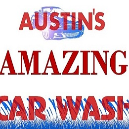
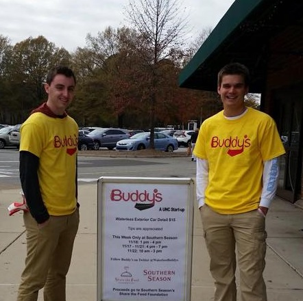
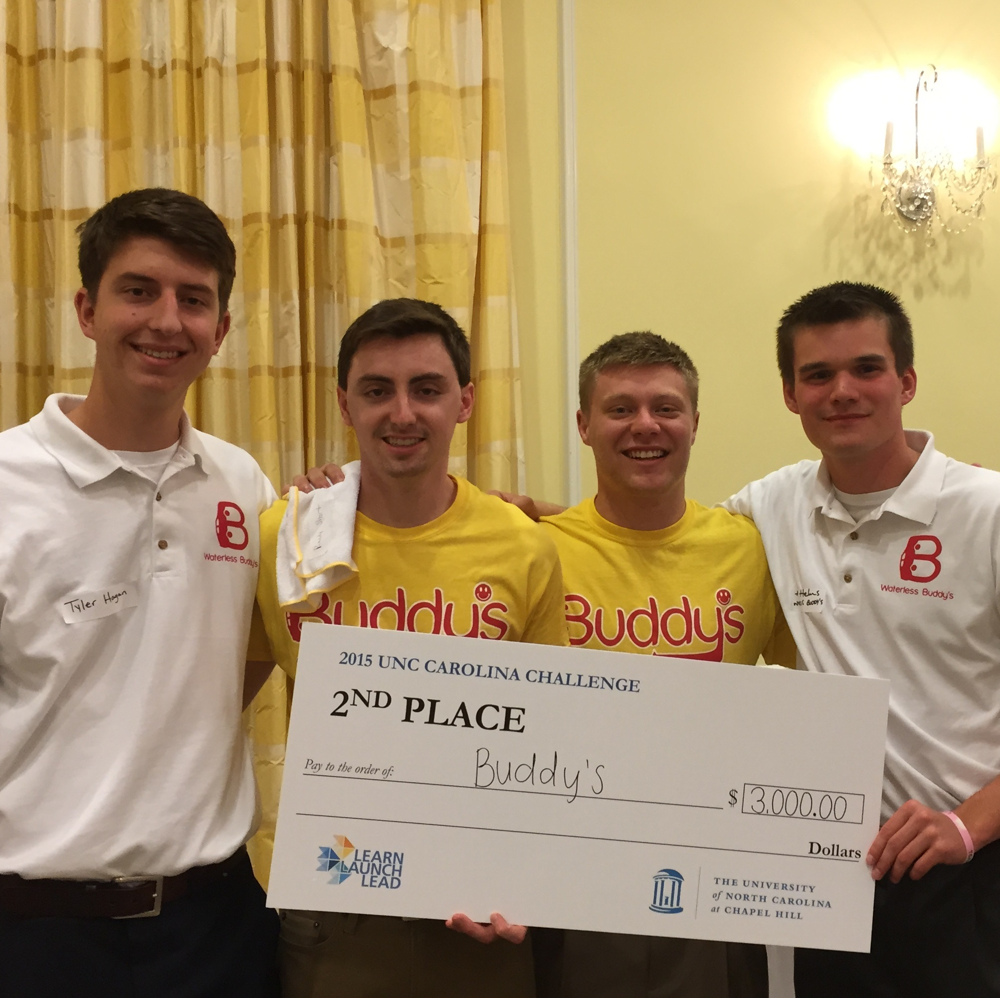
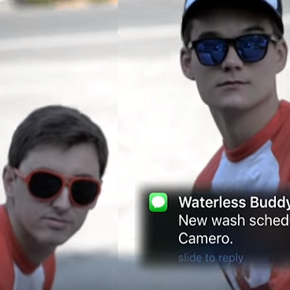

How It Works
Waterless Buddy’s. The only buddy your car will ever need.
Appointment
You tell us when and where you would like your car cleaned.
Cleaning
One of our Buddy's will come to the specified location and give your car a full exterior detail, using our Waterless Solution.
Satisfaction
You come back to your car spotless, without the hassle of driving to a car wash or the environmental impact of using water (saving up to 45 gallons of water per wash).
Pricing
Your car type determines price. Waterless Buddy’s is currently offering an exterior only detail.

Sedan - $20
This includes your average 4-passenger 4 door vehicle.

Non-Sedan - $23
SUV's, Trucks, Crossover's. You name it, we'll wash it.
Born From A Bucket
Waterless Buddy’s wasn’t always a “waterless” car wash.
-

2005
Austin's Amazing Car Wash
When Austin (founder) was 12 years old, his parents gave Austin arguably the best present he had ever received, a bucket, car wash soap, and a sponge. After his parents taught him the proper car washing techniques, Austin’s Amazing Car Wash was born. The company grew substantially during his junior year in high school where he had 25 customers. Although the business gave Austin a recreational income, he knew that it would only be a hobby, not a sustaining business. Until England.
-
May 2014
An Idea is Born
During a trip to England with Austin’s closest friend, and roommate, Nick Kramer, he saw the lightbulb go off, when he went to Tesco for the first time, who happens to provide a wash-while-you-shop service on a large scale with a partnership with Waves (car washing company that uses water).
-
August 2014
Becoming Partners
During August of 2014, Austin approached, Randy Short, a Colorado native, who lived conveniently in the same suite as Austin. Austin and Randy worked closely with Jim Kitchen, who teaches an entrepreneurship class at the Kenan-Flagler Business School, in order to get Buddy’s to market.
-

November 2014
A Company is Born
On Nov 16, 2014 Buddy’s (now Waterless Buddy’s LLC) launched its first test market at Southern Season in Chapel Hill.
-

March 2015
Carolina Challenge
Buddys won 2nd place at the Carolina Challenge.
-

October 2015
Beta Launch
Launched beta as a waterless on-demand car wash.
-
Be Part
Of Our
Story!